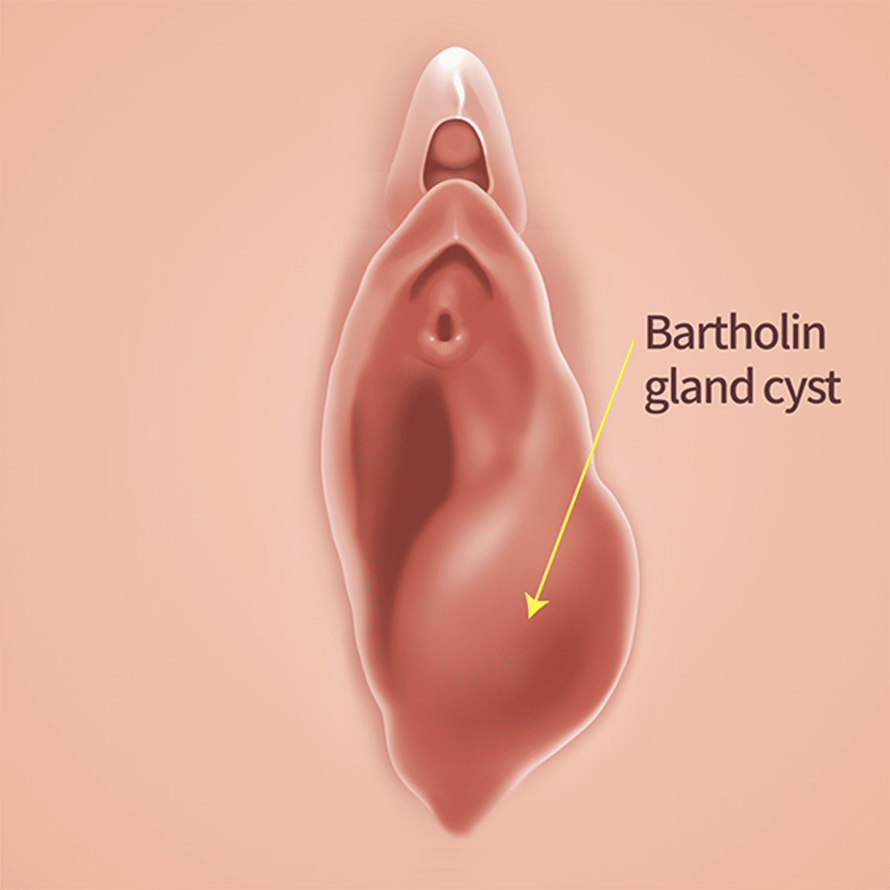
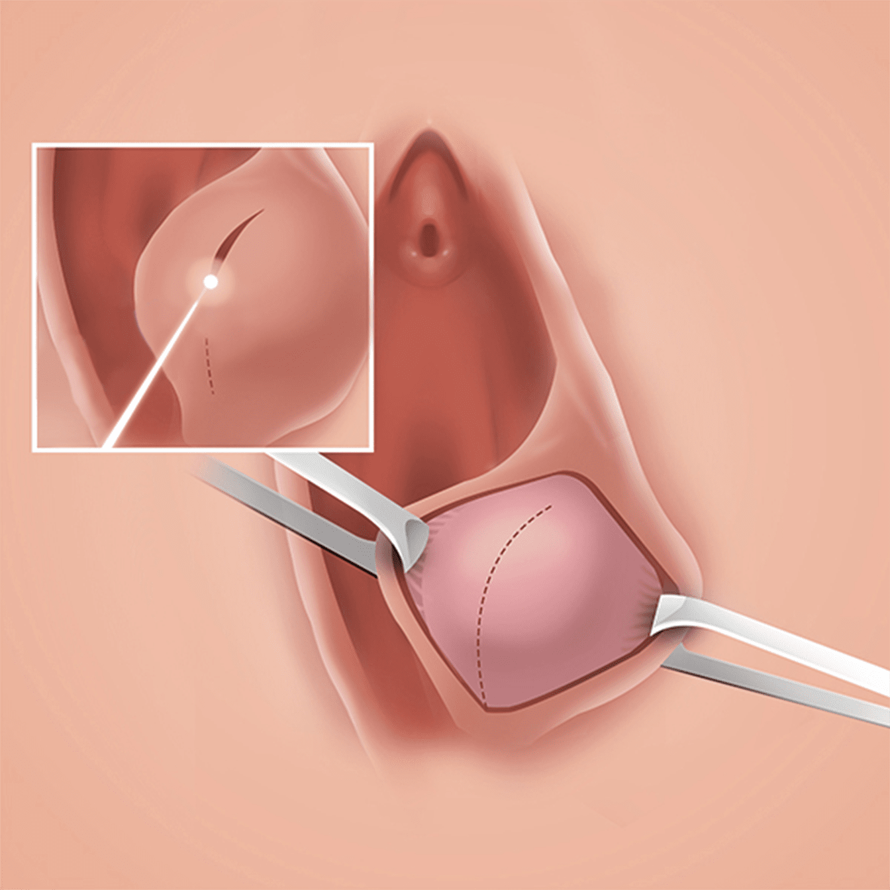
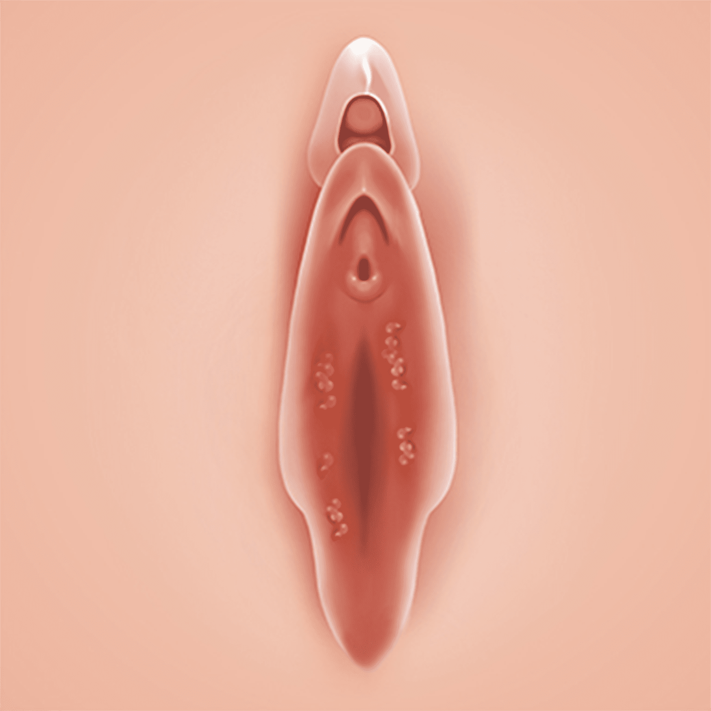
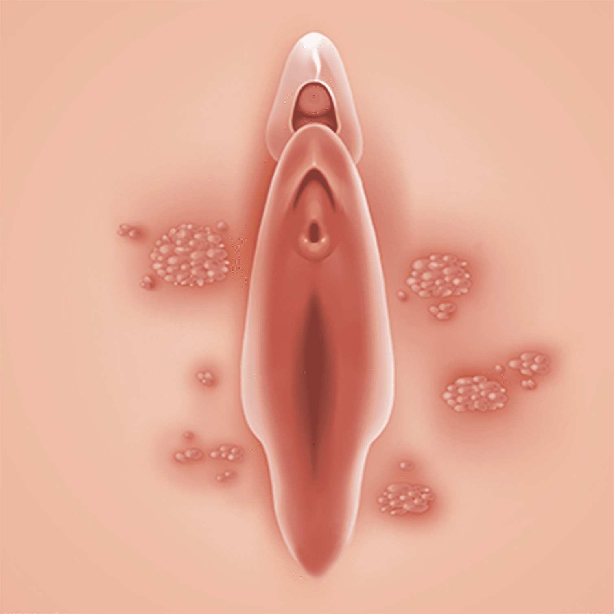

나를 위한 외음부 소수술
빠르고 정확한 진단과 치료로
외음부의 건강과 아름다움을 지켜드립니다
외음부는 습윤한 환경에 노출되면서 질환에 걸리기 쉬우며,
각종 낭종과 수포들이 발생하기도 합니다
이를 방치할 경우
암과 같은 더 큰 질환이 되는 것은 물론이고, 외음부와 소음순의
비대나 착색,
소양증의 발생으로 인한 변형 등으로
본연의 아름다움까지 잃을 수 있습니다
나를위한 산부인과는 투약과 처방 외에도 외음부 소수술을 통해
외음부 병변의 근원을 제거하고
변형을 방지하여 아름다움을
지키는 치료를 전문적으로 제공하고 있습니다

시술 부위에 열 상승 없이 에너지를 전달하여
정상조직에 손상 가능성이 적으며
절개가 되는 동시에 지혈이 이루어지기 때문에
부종과 통증이 적고 바로 일상생활이
가능할 정도로
회복이 빠른 성형 레이저입니다.
-
절개와 동시에 지혈
출혈 최소화
50-60도의 낮은 열로 절개와
동시 지혈이 가능하여
예민한 부위의
손상이 적고
회복이 빠릅니다 -
통증과 부기 최소화
흉터가 거의 남지 않음
성형외과 수술 시 사용했던
의료장비로 민감한 부위 절개 시
섬세한 교정 및 디자인이
가능합니다 -
빠른 회복
빠른 일상생활 복귀
붓기나 통증이 거의 없어
다음날 출근과 일상생활도
가능합니다
바르톨린 낭종 조대술
-

-

-
1
부위를 깨끗이 소독합니다.
-
2
국소마취주사제인 리도카인을 시술 부위에
주사하여 국소마취를 시행합니다.
시술이 두려워 시술 자체에
협조가 안 되는 경우에는
필요시
간단한 정맥마취(수면마취)를
시행할 수도 있습니다.
(만약 과거에 마취제나 약물에
과민반응이 있었던 분은 말씀해 주십시오) -
3
1-2cm 정도 레이저를 이용해
무혈 절개한 뒤, 지속적으로 배농이
가능하도록 녹는 봉합사를 이용하여
4군데 정도 봉합 후 배액관을 설치합니다.
시술시간은 10분 정도이나 범위와
개수에 따라 길어질 수 있습니다. -
4
성생활, 요도 자극, 임신 등이
원인이 되어 세균이 쉽게
요도를 통해 방광에 침입합니다.
바르톨린 낭종 조대술
시술 후 주의사항
시술 후 주의 사항은 개인 차가 있을 수 있습니다.
-
01
시술 다음 날과 시술 후 일주일 뒤에 내원하시어 소독 후 경과를
확인합니다. -
02
시술후 2주 차에 시술 부위를 고정하던 배액관과 남은 실을
제거합니다.
경과에 따라 염증이 심한 경우 제거 시기가
늦춰질 수 있습니다. -
03
시술 후 7~10일간 소량의 출혈 및 노란 분비물이 나올 수 있으니
패드를 착용해 주세요. -
04
감염 방지를 위해 본원에서 드린 청결제를 이용해 하루 2번 세정 및
건조해 주세요. -
05
시술 당일부터 샤워는 가능하나, 탕 목욕이나 성관계는 2주 정도
삼가 주세요. -
06
가벼운 일상생활은 시술 당일부터 가능합니다. 과도한 운동이나
꽉 끼는 옷은 시술 후 2주간 피해 주세요. -
07
처방된 약은 항생제와 소염진통제입니다.
복약 후, 알레르기 반응
(가려움, 두드러기, 설사, 복통)이 있을 시 본원으로 알려주세요.
외음부 피지 낭종
치료가 필요한 경우
-
치료를 받아도
재발되는 경우 -
손으로 짜내도
같은 자리에
피지가
차오르는 경우 -
증상이 계속해서
악화되는 경우 -
피지 낭종의
크기가 클 경우 -
피지가 나오며
고약한 냄새를
동반하는 경우 -
외음부에 통증
등의
증상을
일으키는 경우
외음부 피지 낭종
치료방법
사타구니 피지 낭종이 적을 경우에는
주사 치료를 하거나 경구약을 통해 치료를 할 수 있으나
그 크기가 클 경우에는 절개 치료가 필요할 수 있기 때문에
검진을 통해 증상에 맞춰 치료를 적용하는 것이 중요합니다.
-
질환 원인
파악 내원 후 면담을
통해 자극 물질에
대한 원인 파악 -
검진 및 관찰
시각적인 검진과
대경을 사용한
외음부 관찰 -
조직 검사
실시 필요에 따라
외음부의
조직검사 실시 -
생활습관
교정 외음부의
피부관리를 위해
생활습관 교정 -
증상에 따른
약물 투여 조직 검사
결과에 따라 증상에
따른 약물 투여 -
증상에 따른
절개치료 증상이 큰 경우
절개 치료 진행
최소절개로 통증과 출혈을 감소시키고
성형봉합 기법으로 흉터를 최소화 하여 진행합니다.”
피지 낭종
시술 후 주의사항
시술 후 주의 사항은 개인 차가 있을 수 있습니다.
-
01
시술 다음 날과 시술 후 일주일 뒤에 내원하시어 소독 후 경과를
확인합니다. -
02
시술후 1주 차에 시술 부위를 봉합한 실을 제거합니다. 경과에 따라
2주 차에 제거할 수도 있습니다. -
03
시술 당일에는 시술 부위에 부착된 드레싱에 물이 닿지 않게 해주시고,
소변 등에 의해 시술 부위가 오염된 경우 드레싱을 교체해 주세요.
시술 다음 날 오후부터 샤워는 가능하나 탕 목욕이나 성관계는
2주 정도 삼가 주세요. -
04
감염 방지를 위해 본원에서 드린 청결제를 이용해 하루 최소 1번 이상
세정 및 건조해 주세요.
이후 소독 면봉으로 소독 후, 다시 건조해
주세요. 건조 후 수술 부위를 보호하기 위해 메딕스 밴드를 붙여주세요.
(단, 시술 부위의 반창고가 젖거나 습하게 될 경우 시술 부위가 벌어질
수 있으니 이런 경우 과감히 제거하시고 패드를 착용해 주세요) -
05
가벼운 일상생활은 시술 당일부터 가능합니다. 과도한 운동이나
꽉 끼는 옷은 시술 후 2주 정도 피해 주세요. -
06
처방된 약은 항생제와 소염 진통제입니다. 복약 후, 알레르기 반응
(가려운, 두드러기, 설사, 복통)이 있을 시 본원으로 알려 주세요.
콘딜로마 (곤지름)
HPV에 의해 생기는 가장 흔한 성병 중 하나입니다.
항문 성기의 사마귀는 습한 표면,
특히 여성의 질과 항문 입구에 나타납니다.
또한 생식기와 항문 주위 어디에도 나타날 수 있습니다.
생식기사마귀는 작고, 편평하고, 살 색깔의 융기,
꽃양배추(cauliflower) 모양의 융기일 수 있으며,
아무 증상도 일으키지 않을 수도 있으나,
가려움, 작열감, 압통이나 통증을 일으킬 수 있습니다.
항문과 생식기 부위의 피부에 형성되는 사마귀입니다.
신체의 다른 부위 사마귀를 발생시키는 것과 동일한 바이러스인
인간유두종바이러스(human papilloma virus, HPV)의
특정 아형(亞型)이 원인입니다.
항문 성기의 사마귀는
성교를 통해 전파되므로 성 매개 질환(STD)로 분류되며,
항문 성기의 사마귀가 발생하려면 6개월 걸릴 수 있기 때문에,
증상이 없어도 감염이 있을 수 있습니다
전염력이 강한 바이러스입니다.
곤지름은 인유두종바이러스
HPV에 의해 발병하는 질환입니다.
주로 성기와 항문 주위에 생기며 빠른 시일 내 원인균에 대한
치료를 하지 않는 경우 수시로 재발을 일으킬 수 있습니다.
전염성이 강해 성 접촉만으로 감염 확률이 50%
간접적 접촉만으로 전염이 가능하며,
원인균이 잠복하는 성질이 있어 정밀검사가 필요
받기 전까지는 주의가 필요합니다.
콘딜로마 (곤지름)의
주요 원인
곤지름은 인유두종바이러스 HPV에 의해 발병하는 질환입니다.
주로 성기와 항문 주위에 생기며 빠른 시일 내 원인균에 대한
치료를 하지 않는 경우 수시로 재발을 일으킬 수 있습니다.
- 자궁경부암
- 음경암
- 요도암
- 항문암
- 후두암
- 인두암
매년 50만 명이 진단받고 25만 명이 사망하는 암입니다.
암을 유발할 수 있는 HPV 바이러스 질환인 콘딜로마 (곤지름)는
발병 시 제때 치료하지 않으면
위험한 결과를
초래할 수 있기 때문에사전에 백신을 통한 예방접종을
미리 하는 등 세심한 주의가 필요합니다.
콘딜로마와 유두종증의
차이와 치료
보통 경험 부족한 의료진의 경우에는 콘딜로마 (곤지름)과
유두종증을 오진하여 치료하는 경우가 있습니다.
잘못된 증상 파악을 통해 치료가 진행되는 경우 증상은
더욱 악화될 수 있기에 올바른 진단을 통한 치료가 중요합니다.
| 구분 |
 유두종증vestibular papillomatosis |
 콘딜로마(곤지름)condyloma acuminata |
|---|---|---|
| 강도 | 부드럽다 | 딱딱하다 |
| 위치 | 대칭적이다 |
비대칭적이고
무작위적이다 |
| 배열 | 줄지어 생긴다 |
한점에서
삐져나오는 모양이다 |
| 편평상피 침범 | 점막부분에 생긴다 |
점막뿐 아니라,
대음순과 같은 일반 피부에도 생긴다 |
| 색 |
색깔이
주변조직과 비슷하다 |
분홍,빨강, 흰색으로
주변과 구별되는 색 |
| 치료방법 |
대게는 증상이 없고
저절로 소실되는 경우도 있으나 소양증이 심하거나 번져서 미용상 제거를 원하는 경우에는 TCA 도포만으로도 쉽게 제거된다. |
레이저소작술 |
주변조직을 응괴 시킵니다.
적은 수의 축축한 점막에서 효과적으로
사용되며, 이는 임산부에서도 적용이 가능하며 아직 적절한 농도가
정해진바 없지만
보통 30~70% 용액을 사용하게 됩니다.
고농도로 갈수록 극도의 주의가 요구되며, 1~2주마다 한 번씩 치료를
진행합니다.
TCA 용액 치료는 중화가 필요할 수 있으며 비눗물이나
탄산나트륨으로 씻어냅니다.
열에너지에 의해 조직을 파괴하는 수술 방법으로
수술을 통해 최소한의 내원으로 병변을 제거할 수 있으며,
특히 수술의 경우에는 대량의 병변을 제거하는데 용이합니다.
콘딜로마
시술 후 주의사항
시술 후 주의 사항은 개인 차가 있을 수 있습니다.
-
01
시술 후 첫째 날과 셋째 날 내원하여 소독 및 경과를 확인합니다.
-
02
시술 후 1주일째 남은 병변 혹은 재발 병변 여부를 확인합니다.
-
03
시술 후 7-10일가량 소량의 출혈 및 노란 분비물이 나올 수
있습니다. -
04
감염방지를 위해 병원에서 드린 청결제를 이용하여 하루 두 번
청결을 유지해 주시고 연고를 발라주세요. -
05
통 목욕이나 성관계는 치료가 끝날 때까지 삼가 해주세요.
-
06
가벼운 일상생활은 시술 당일부터 가능합니다.
과도한 운동이나 꽉 끼는 옷은 시술 후 4주가량은 피해주세요. -
07
처방된 약은 항생제와 소염진통제입니다. 복약 후, 알레르기반응
(가려운, 두드러기, 설사, 복통)이 생기시면
병원으로 알려주시기
바랍니다.
치료받기 전
반드시 알아두셔야 합니다.
외음부란 여성의 생식기에서 가장 눈에 잘 띄는 기관입니다.
일반적으로 외음부 피부 질환은 외음부와 질 부위에
가려움증과 타는 듯한 느낌, 통증과 성교통 등을 일으키게 됩니다.
나이가 들어감에 따라 폐경기 이후의 에스트로겐 감소로
여성들은 외음부 피부를 자극하는 다양한 질환에 쉽게 걸리게 됩니다.
그러나 외음부 피부 질환에 대해서 아직까지 의학적 관심이
부족한 상태로, 불편한 여성들을 도와주는 해결책이 잘 없는
실정입니다.
그렇다 보니 어디 가서 말하지도 못하고
겉보기만으로 가볍게 진단하고 치료하는 경우가 많습니다.
실제로 인터넷으로 유사한 증상만을 찾아보고
자체적으로 판단하여 치료를 하는 경우도 흔히 볼 수 있습니다.
그러나 외음부 질환은 다른 질환으로 감염이 이어질 수 있고,
원인에 따라서는 치료방법은 다르기 때문에 증상에 맞춰
진단을 받아 치료를 받는 것이 매우 중요합니다.